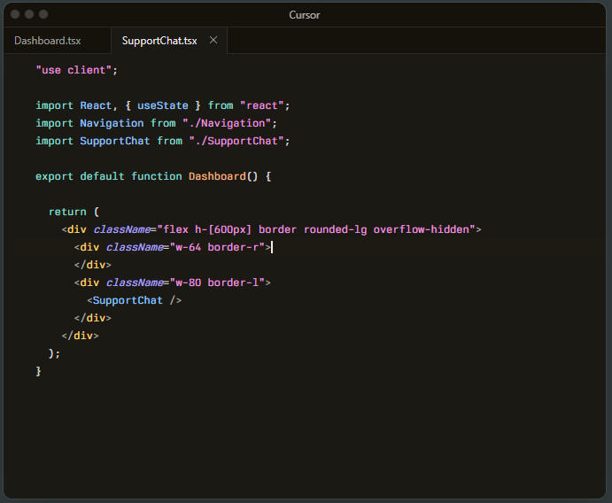
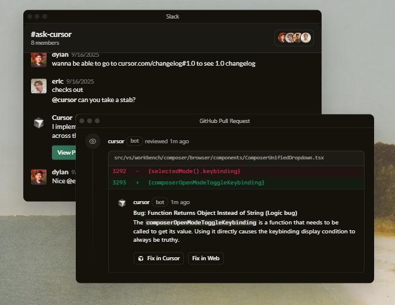

Built to make you extraordinarily productive,
Cursor is the best way to code with AI.
Trusted every day by millions of professional developers.
Agent turns ideas into code
A human-AI programmer, orders of
magnitude more effective than any
developer alone.

Agent turns ideas into code
A human-AI programmer, orders of
magnitude more effective than any
developer alone.
Agent turns ideas into code
A human-AI programmer, orders of
magnitude more effective than any
developer alone.

“The best LLM applications have an autonomy slider: you control how much independence to give the AI. In Cursor, you can do Tab completion, Cmd+K for targeted edits, or you can let it rip with the full autonomy agentic version.”
Diana Hu
General Partner, Y Combinator
“The best LLM applications have an autonomy slider: you control how much independence to give the AI. In Cursor, you can do Tab completion, Cmd+K for targeted edits, or you can let it rip with the full autonomy agentic version.”

Jensen Huang
President & CEO, NVIDIA
“The best LLM applications have an autonomy slider: you control how much independence to give the AI. In Cursor, you can do Tab completion, Cmd+K for targeted edits, or you can let it rip with the full autonomy agentic version.”
Andrej Karpathy
CEO, Eureka Labs
“The best LLM applications have an autonomy slider: you control how much independence to give the AI. In Cursor, you can do Tab completion, Cmd+K for targeted edits, or you can let it rip with the full autonomy agentic version.”
Patrick Collison
Co‑Founder & CEO, Stripe
“The best LLM applications have an autonomy slider: you control how much independence to give the AI. In Cursor, you can do Tab completion, Cmd+K for targeted edits, or you can let it rip with the full autonomy agentic version.”
shadcn
Creator of shadcn/ui
“The best LLM applications have an autonomy slider: you control how much independence to give the AI. In Cursor, you can do Tab completion, Cmd+K for targeted edits, or you can let it rip with the full autonomy agentic version.”
Greg Brockman
President, OpenAI
Stay on the frontier
Use the best model for every task
Choose between every cutting-edge model from OpenAI, Anthropic, Gemini, xAI, and Cursor.
Complete codebase understanding
Cursor learns how your codebase works, no matter the scale or complexity.
Develop enduring software
Trusted by over half of the Fortune 500 to accelerate development, securely and at scale.

Changelog
Cursor is an applied research team focused on building the future of software development.

Recent Highlights
Introducing Cursor 2.0 and Composer
A new interface and our first coding model, both purpose-built for working with agents.
Improving Cursor Tab with online RL
Our new Tab model makes 21% fewer suggestions while having 28% higher accept rate.
1.5x faster MoE training with custom MXFP8 kernels
Achieving a 3.5x MoE layer speedup with a complete rebuild for Blackwell GPUs.